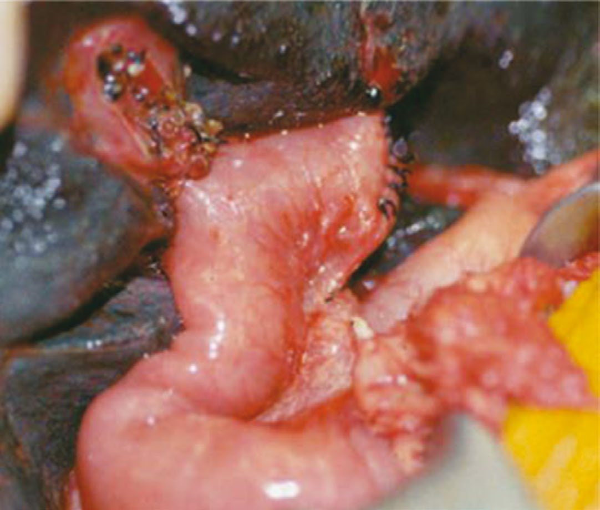

Biliary Atresia
Summary
- Biliary atresia is a condition where the outcome is decided by how quickly the diagnosis is made. It is the most common cause of neonatal jaundice requiring surgery and the most common indication for liver transplantation in children [1].
- Untreated it progresses to cirrhosis and hepatic failure. The Kasai procedure must be performed before the age of 3 months to avoid irreversible liver damage, and after that age transplantation is generally needed instead [1].
- The clinical trigger is simple: progressive jaundice persisting beyond 2 weeks after birth suggests atresia [1].
Definition
Biliary atresia is obliteration of the biliary tree presenting in infancy. It can involve the extrahepatic biliary tree, the intrahepatic tree, or both [1].
Pathophysiology
The obstruction to bile flow produces a progressive fibrotic process in the liver. Liver biopsy shows periportal fibrosis, bile plugging and eventual cirrhosis [1], and without relief of the obstruction the child develops continued cirrhosis and eventual hepatic failure [1].
That progression is why the age threshold exists: after roughly 3 months the liver damage is irreversible and restoring bile drainage no longer rescues the organ [1].
Clinical features
Progressive jaundice persisting more than 2 weeks after birth suggests biliary atresia [1].
The distinction that matters at the cot side is between physiological jaundice of the newborn, which is an unconjugated hyperbilirubinaemia from immature glucuronyl transferase, and biliary atresia, which is obstructive and therefore conjugated, the two are separated on the Liver Anatomy and Physiology page [1].
Etiology
Biliary atresia is the commonest surgical cause of neonatal jaundice [1]. The other neonatal cause of obstructive jaundice a surgeon must exclude is a choledochal cyst, covered on the Biliary Strictures and Cholangiocarcinoma page.
Diagnosis
Diagnosis is by liver biopsy, which shows periportal fibrosis, bile plugging and eventual cirrhosis [1].
Ultrasound and HIDA scanning can reveal the atretic biliary tree [1].
Thresholds and severity
Two weeks is the threshold at which persisting jaundice should prompt investigation [1].
Three months is the threshold beyond which the Kasai procedure will not prevent irreversible liver damage, and beyond which liver transplantation is generally required [1].
Treatment and Management
The Kasai procedure (hepaticoportojejunostomy) is attempted first. It involves resecting the atretic extrahepatic bile duct segment and anastomosing a Roux-en-Y limb to the liver [1].
Choleretic agents such as phenobarbital, and steroids, are used to try to increase bile flow after the procedure [1].
Where the child presents after 3 months, transplantation rather than Kasai is generally the route [1]; the transplant itself is covered on the Liver Transplantation page.
Procedural interventions
The operation is a Roux-en-Y hepatoportoenterostomy, anastomosed to the liver at the porta after the atretic extrahepatic duct has been resected [1].

Complications
The complication that defines the disease is progression despite surgery: continued cirrhosis and eventual hepatic failure in those for whom the Kasai does not establish adequate drainage [1].
Outcomes
Outcome after the Kasai procedure divides into thirds: one-third get better, one-third go on to liver transplantation, and one-third die [1].
That distribution, and the fact that biliary atresia is the most common indication for paediatric liver transplantation [1], is why the 2-week jaundice rule is treated as a hard referral trigger rather than a period of observation.
References
- The ABSITE Review, 2022, Ch. 31 Liver
- Sabiston Textbook of Surgery, 22nd ed., Ch. 117 Pediatric Surgery